Empire romainwiki-fr
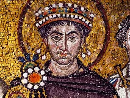
Empire byzantinmemo:civilisations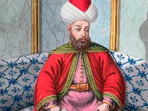
Empire ottomanmemo:civilisations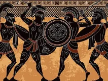
Empire perse achéménidememo:civilisations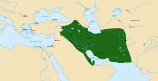
Empire parthebing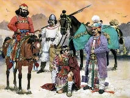
Empire sassanidebing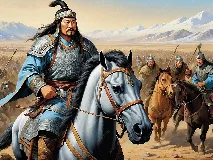
Empire mongolbing-retry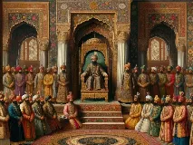
Empire mogholmemo:civilisations Empire mauryamemo:civilisations
Empire mauryamemo:civilisations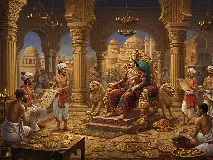
Empire Guptabing-retry
Empire aztèquebing-retry
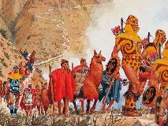
Empire incabing-retry
Civilisation mayabing-retry
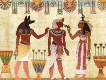
Ancien Empire egyptienwiki-fr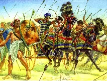
Moyen Empire egyptienbing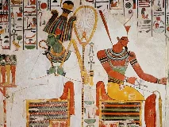
Nouvel Empire egyptienbing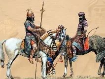
Empire assyrienwiki-fr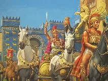
Empire babylonienbing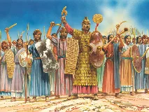
Empire hittitewiki-en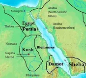
Royaume de Koushbing Empire du Malimemo:civilisations
Empire du Malimemo:civilisations Empire songhaïbing
Empire songhaïbing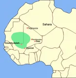
Empire du Ghanabing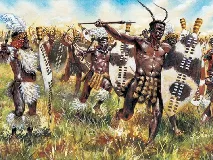
Empire zouloubing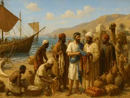
Empire d'Aksoummemo:civilisations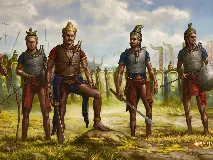
Empire khmerbing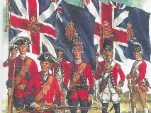
Empire britanniquewiki-fr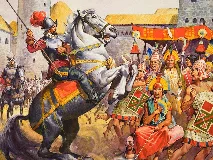
Empire espagnolbing Empire portugaiswiki-fr
Empire portugaiswiki-fr
Empire colonial françaiswiki-fr
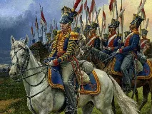
Empire russebing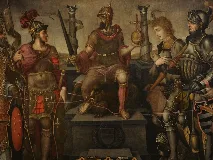
Saint-Empire romain germaniquewiki-fr Empire austro-hongroisbing
Empire austro-hongroisbing
Sumerbing
Empire d'Akkadbing
Empire mèdewiki-en
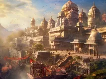
Civilisation de l'Indusmemo:civilisations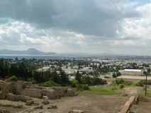
Carthagememo:civilisations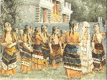
Civilisation minoennewiki-fr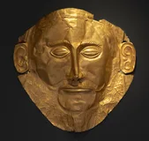
Civilisation mycéniennewiki-fr
Empire d'Alexandre le Grandbing
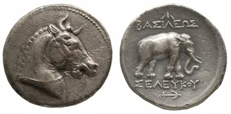
Empire séleucidewiki-en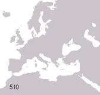
République romainewiki-fr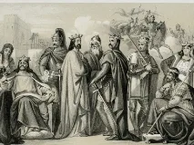
Empire carolingienbing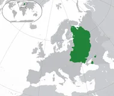
Rus' de Kievwiki-fr
Empire allemandbing
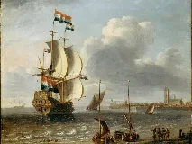
Empire colonial néerlandaiswiki-fr
Union soviétiqueECHEC
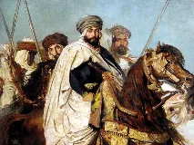
Califat de Cordouewiki-fr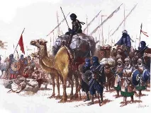
Empire almoravidewiki-fr
Empire almohadebing
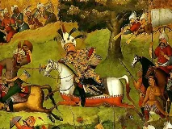
Empire safavidebing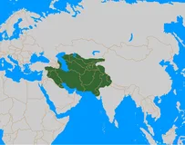
Empire timouridewiki-fr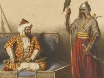
Sultanat de Delhibing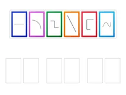
Empire japonaisbing
Empire cholawiki-en
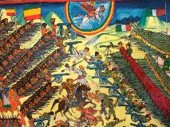
Empire éthiopienbing
Empire ashantibing
Royaume du Béninbing
Empire du Kanem-Bornoubing